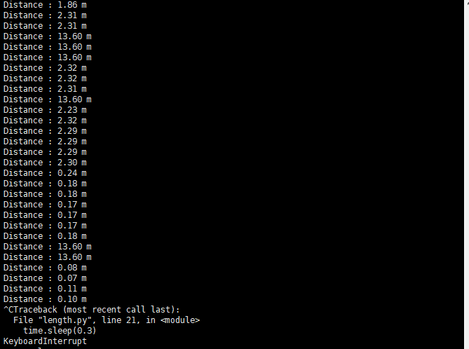
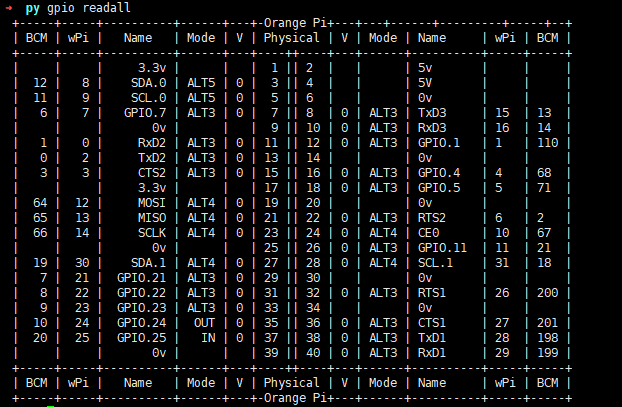
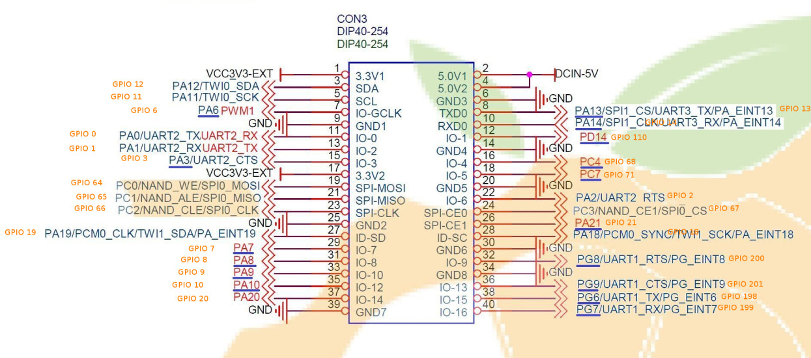

OrangePi Lite 系列2:使用US-015超声波模块测距
2017-07-26
先来一张效果图吧：

提示
用到的工具或软件有：
- WiringPi
- orangepi_PC_gpio_pyH3
- US-015模块一个
- 杜邦线若干
准备工作
1.安装WiringPi
安装方法来自官方用户手册：
安装源码需要的编译工具
$ sudo apt-get install gcc g++ make
编译GPIO 的H3 的驱动
| git clone https://github.com/kazukioishi/WiringOP.git -b h3cd WiringOPchmod +x ./buildsudo ./build |
|---|
GPIO 打印信息
| gpio -vgpio version: 2.20Copyright (c) 2012-2014 Gordon HendersonThis is free software with ABSOLUTELY NO WARRANTY.For details type: gpio -warrantyBanana Pro Details:Type: Banana Pro, Revision: 1.2, Memory: 1024MB, Maker: LeMaker |
|---|
显示
gpio reada

2.安装 orangepi_PC_gpio_pyH3
在github上下载orangepi_PC_gpio_pyH3或者使用如下命令clone:
git clone https://github.com/duxingkei33/orangepi_PC_gpio_pyH3.git
下载完成后执行以下命令安装：
python setup.py install
若提示Python.h No such file or directory请运行以下命令安装python-dev
apt install python-dev
再次执行安装命令即可
3.连接US-015模块至OrangePi Lite
US-015 模块有一个4Pin接口
从左到右依次编号1,2,3,4。它们的定义如下：
- 1号Pin：接VCC电源（直流5V）。
- 2号Pin：接外部电路的Trig端，向此管脚输入一个10uS以上的高电平，可触发模块测距。
- 3号Pin：接外部电路的Echo端，当测距结束时，此管脚会输出一个高电平，电平宽度为超声波往返时间之和。
4号Pin：接外部电路的地。
OPI Lite的GPIO图如下：

将1号Pin连接至GPIO的2口，2-4分别连至GPIO的35（PA10），37（PA20），39（GND）口。
编写代码
vi length.py
from pyA20.gpio import gpio
from pyA20.gpio import port
import time
def checkdist():
# 设置PA10为高电平，持续15微秒（大于10均可）
gpio.output(port.PA10,1)
time.sleep(0.000015)
gpio.output(port.PA10,0)
# 当PA20接收到高电平信号后开始记录时间，高电平小时候记录时间
while not gpio.input(port.PA20):
pass
t1=time.time()
while gpio.input(port.PA20):
pass
t2=time.time()
# 根据超声波速度计算距离
return (t2-t1)*340/2
# 初始化gpio
gpio.init()
# 设置PA10口为output
gpio.setcfg(port.PA10,1)
# 设置PA20口为input
gpio.setcfg(port.PA20,0)
# 等待2秒
time.sleep(2)
while True:
print 'Distance : %0.2f m' %checkdist()
# 每隔三秒获取距离
time.sleep(0.3)
最后执行
python length.py
即可看到运行结果。